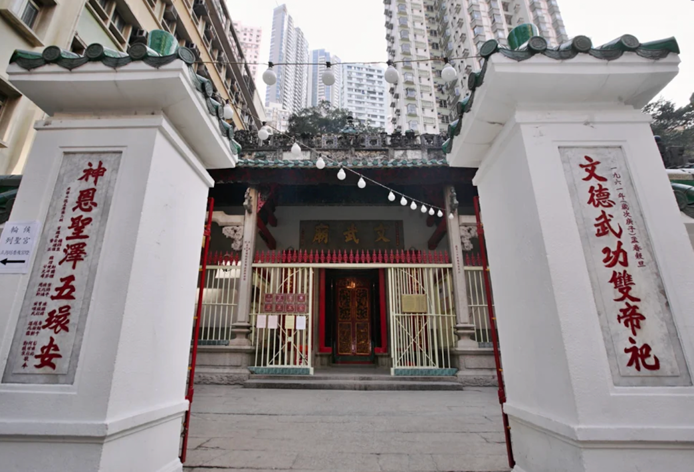
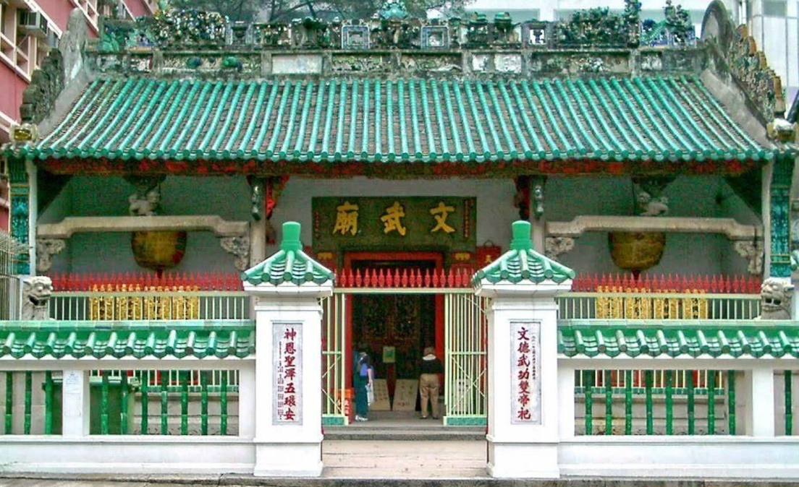
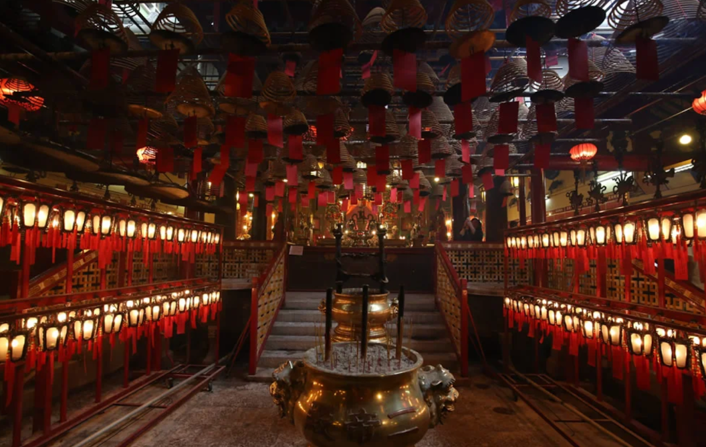
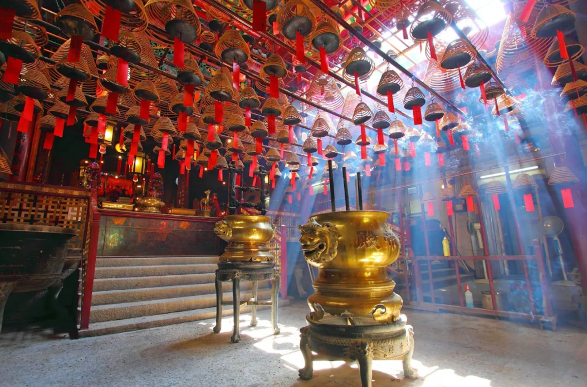

故事與 AI 影片
這是網站的核心內容
每一個寺廟不只是一個地點，而是一組可以被觀看、聆聽和理解的故事。點擊下面的故事，觀看 AI 歷史重構、儀式解說與現場影像。
01
02
不肯先跪的人
地方掌故03
文與武
宗教象徵04
黃紙與承諾
儀式文化05
銅鐘與神轎
文物故事城市史實
街角與廟門
文武廟位於上環荷李活道，是香港重要的歷史建築。這個入口將把城市街景、建築細節和歷史資料連在一起。
AI 歷史重構 · 文武廟故事
香港寺觀立體地圖
城市模型 · 寺觀故事入口
目前展示香港城市地形與街區，不在未核對前放置寺廟座標
已核對地點
在 Google Maps 打開 ↗香港文武廟
上環荷李活道 124–126 號｜香港島北岸
先確認單一地點與 Google Maps 位置，再逐步加入其他寺觀標記。
寺廟3D
可旋轉觀看的寺廟建築空間，包含屋頂、門樓、正殿、柱廊與台基。這個區域用於展示建築和宗教空間，後續可替換成文武廟的實景建模。
概念復原圖 · 非實景掃描
現場影像
作為故事內容的補充


